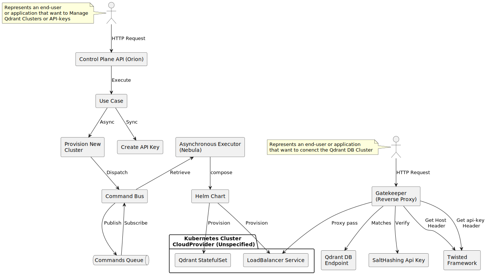

Architecture
There are various methodologies for designing architectures like the one required for this technical challenge. My proposal has been to structure it using building blocks that group, define, and delineate the different responsibilities that I have identified as key and fundamental to achieving a prototype under the established parameters.
These blocks, functional independently and with low coupling between them, constitute a unified whole in their use case: a micro-scale cloud DBSaaS.
Designing in blocks, segregating responsibilities, and considering how workloads will behave in real environments, is fundamental to the approach I have adopted. Far from prematurely optimizing, this architecture stands out for its easy extensibility and iteration.
The segregation of responsibilities will hypothetically allow different engineering teams to evolve the building blocks or add more without compromising or overly complicating the implementation.
The benefits of a distributed architecture like the one proposed also involve certain compromises, such as eventual consistency, duplicate management, and more complex deployments. Although these aspects are not minor, for this particular case I have considered that the benefits outweigh the drawbacks.
Building Blocks
It has been deemed necessary to fragment the proposed solution into four clearly defined blocks by their scope of responsibility, the possible technological stacks that support them, and their deployability and scalability in real-world load scenarios.
Here they are briefly enumerated and described:
- 1 - Orion
This component is the central API of the project and exposes the endpoints that users and stakeholders will use over time. Given its evolutionary nature, a versioning system based on URI resources (/v1/*) has been designed.
- 2 - Nebula
Responsible for executing background tasks, such as provisioning Qdrant clusters. It has higher response times and eventual consistency. This component also interacts with Kubernetes infrastructure, provisioned for each cloud provider, which might eventually require it to reside in different cloud providers or regions.
- 3 - Draftsman
Conceptualized but not Implemented, is operated by DevOps and SRE roles, it is linked to IaaC solutions such as Terraform. Its main mission is the provisioning of cross-region and cross-provider Kubernetes clusters, informing other blocks about new resource pools.
- 4 - GateKeeper
Acts as a Reverse Proxy that exposes the Qdrant DB Clusters, ensuring security through api-tokens. Implemented over the Twisted framework, it allows detailing how a reverse-proxy works and how requests are modified by adding domain logic in the form of code.

The diagram visualizes the previously defined blocks and schematizes their relationships and the underlying technical implementations. Operationally, each block is an independent component with low coupling, and the use of a MonoRepo gives them high cohesion.
The architecture allows for independent development life cycles and simplifies CI/CD processes. Additionally, it reduces accidental complexity and encourages the formation of teams around the defined boundaries.
Interactions Between Components
{kind=link}
The diagram shows that there are two main entry points: an API for cluster management and API-keys, and the endpoint of the Qdrant DB Cluster itself (GateKeeper), which can be replicated multiple times, always close to the DB Clusters it serves.
With this architecture, Qdrant’s endpoints do not need direct exposure to the internet. The use of the CommandBus prevents intensive operations such as infrastructure provisioning from overloading the API. Deployments of new versions of Nebula are downtime-free, as messages accumulate in the broker for later processing.
Thanks to the abstraction of the cloud provider’s infrastructure with Kubernetes, no significant specific implementations in Nebula are required to add new cloud providers.
Specific implementation details for a provider can be addressed at the Chart or CRD level in the case of the Kubernetes Operator.